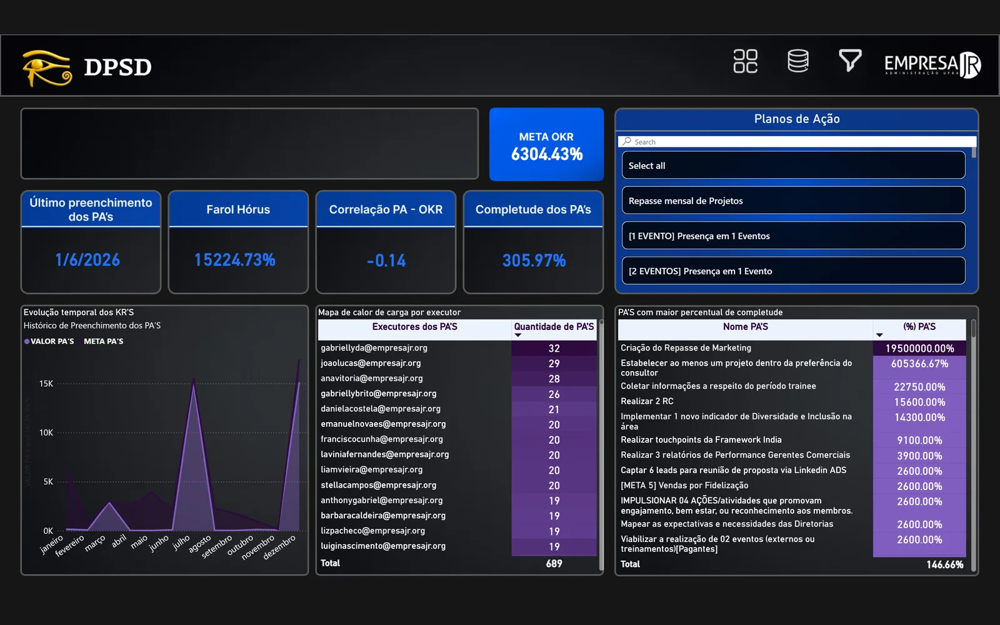

Dados + operação
Hórus.
Indicadores acompanhados na rotina.
Um painel para reunir metas. Uma rotina de alertas para levar o status dos indicadores às lideranças.

01 — O problema
Como tornar os indicadores de diferentes áreas legíveis e manter o acompanhamento presente na rotina?
O planejamento estratégico precisa de uma leitura comum entre áreas. O Hórus reúne metas e indicadores em um painel; o Farol Hórus leva o acompanhamento para a rotina das lideranças.
Para quemLideranças e áreas da organização.
02 — Minha contribuição
Estruturei e evoluí o dashboard, sua base e guia de uso. Apoiei a área de Performance na implementação do Farol Hórus, integrei indicadores ao painel e construí rotinas de alertas. Também participei da capacitação para uso da ferramenta.
Trabalho no contexto da EJ ADM UFBA, em colaboração com a área de Performance. A contribuição abrange dados, dashboard, documentação e automação de acompanhamento.
03 — Decisões do projeto
Uma leitura compartilhada
O painel reúne metas e KPIs por área. Os estados no alvo, atenção e fora do alvo dão contexto ao número e orientam a leitura do planejamento.
O indicador entra na rotina
O Farol Hórus foi descrito como uma rotina semanal de cálculo de status e avisos por e-mail, WhatsApp e Slack. Painel e alerta são apresentados aqui como partes do mesmo acompanhamento.
Escopo bem definido
A consolidação de quadros do Monday para avaliação de desempenho pertence ao AD Conexões. Ela não é atribuída ao Hórus sem documentação específica.
04 — O que foi entregue
A entrega descrita combina visualização de indicadores e comunicação periódica de status. O resultado apresentado é essa capacidade de acompanhamento; não há medição publicada de economia de tempo ou impacto no negócio.
Explorar demonstração
05 — Estágio e limites
Painel + automação. Evolução registrada no ciclo 2026.1; o início da iniciativa não foi delimitado neste recorte.
Os nomes, e-mails e valores exibidos na captura são fictícios. O modelo do relatório não faz parte desta apresentação, e a operação atual não foi revalidada.
- Power BI
- DAX
- n8n
- Modelagem de dados